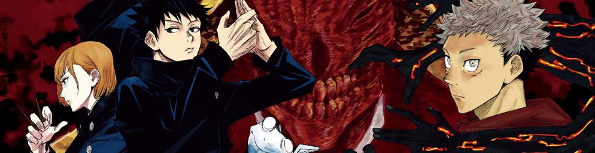
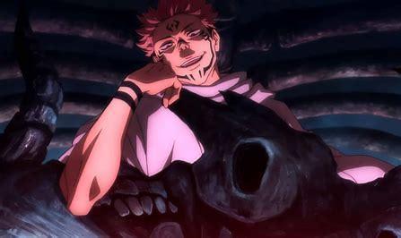
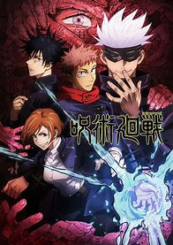
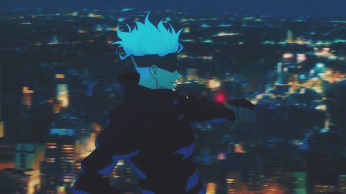

Jujustu Kaisen

Fiche descriptive:
Nom: Jujustu Kaisen
Type: Shonen
Studio d'animation: MAPPA
Disponibe gratuitement sur: Crunchyroll
Nombre d'épisode: Une saison de 24 épisodes.
Saison 2 prévue pour 2023.
Résumé:
Les fléaux, naissant des sentiments négatifs qu’éprouvent les humains,
sont la source des malheurs inexplicables qui se déroulent dans le monde, du moins,
inexplicables pour les personnes qui ne les voient pas.
Les exorcistes, dotés de la capacité de voir ces fléaux, ont pour mission de tous les éradiquer.
Un jour, pour sauver ses amis, Yuji Itadori est amené à se battre contre l’un d’entre eux,
et avale le doigt de Ryômen Sukuna, Roi des fléaux, devenant ainsi son réceptacle.
Il devra alors faire son choix : Mourir, ou survivre ?
Avis:
Jujutsu Kaisen nous plonge, dès le premier épisode,
dans cette dynamique et cette histoire prenante qui nous obligera à nous y aventurer jusqu’au bout.
Les personnages sont tous plus attachants les uns que les autres, chacun ayant une histoire, une personnalité, particulières,
qui les rendent incroyables.
L’animation de MAPPA est vraiment un régale dans cet anime,
ce que l’on aperçoit surtout dans ses combats d’une fluidité et qualité surprenantes.
Les opening et ending, comme
Kaikai kitan,
de l’artiste Eve, ajoutent un charme à cet anime fantastique qu’est Jujutsu Kaisen.
Il s’agit d’un anime que nous vous recommandons fortement, et qu’il serait triste de louper.


